산업용
생활용
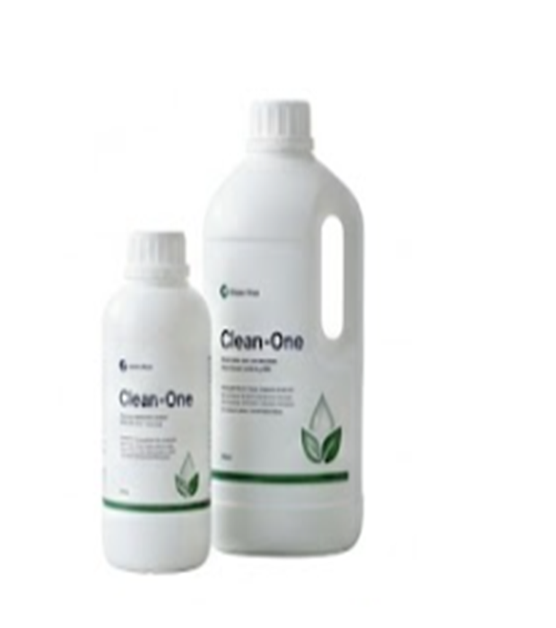
사용현장
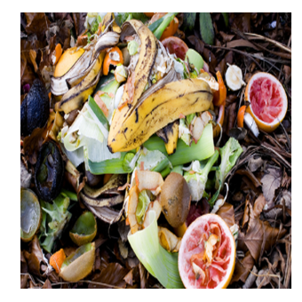
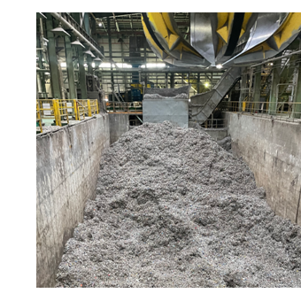
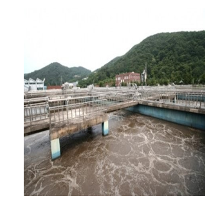
산업용 · 염기성/ 중성 악취 분해
클린원
악취 물질과 접촉하는 순간 즉각적인 반응을 일으켜 냄새를 근본적으로 제거합니다.
주요 특징
- 악취물질과 접촉하여 즉각적으로 분해 반응
- 2차 오염 없는 안전한 성분으로 구성된 친환경 탈취제
- 축산, 산업 현장, 일반 환경 범용 사용
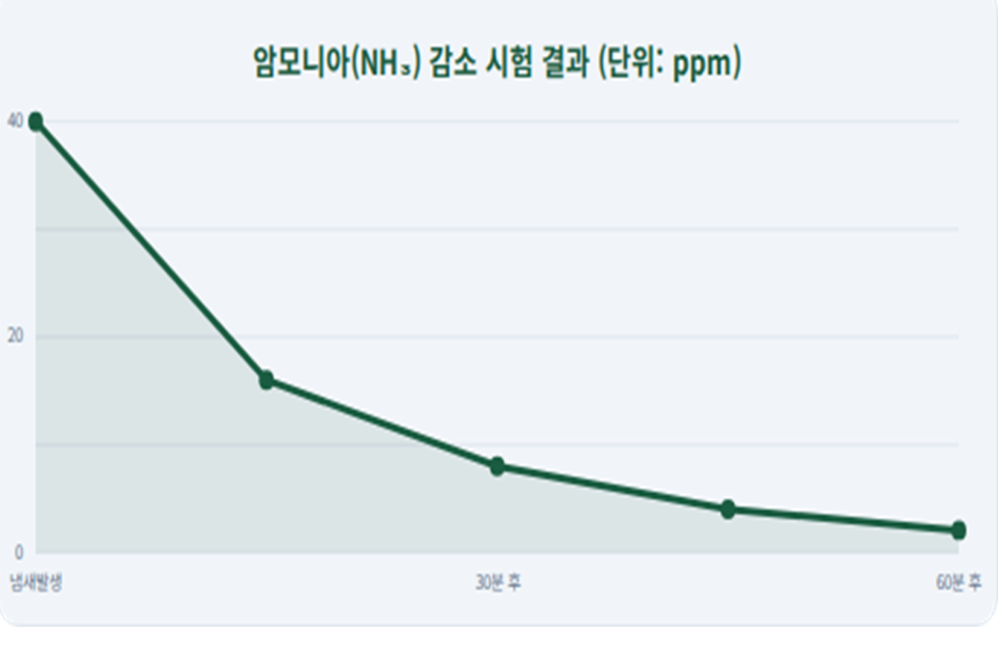
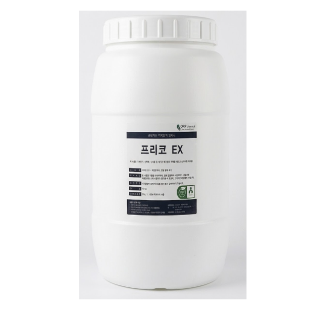
사용현장
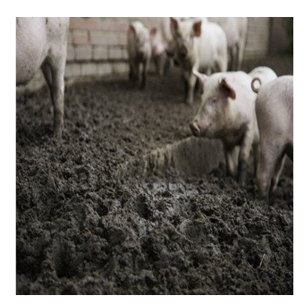
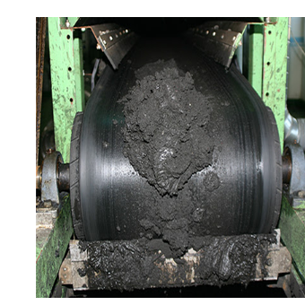
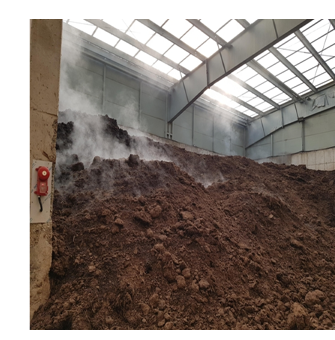
산업용 · 산성 악취 전문 처리 솔루션
프리코EX
악취물질과 접촉하여 즉각 분해하며 산성 계열 악취를 완벽하게 제거하는 전문 탈취 솔루션입니다.
주요 특징
- 광범위한 악취 스펙트럼 대응
- 안정성이 검증된 천연 원료 사용
- 복합 악취 발생 현장에 최적화
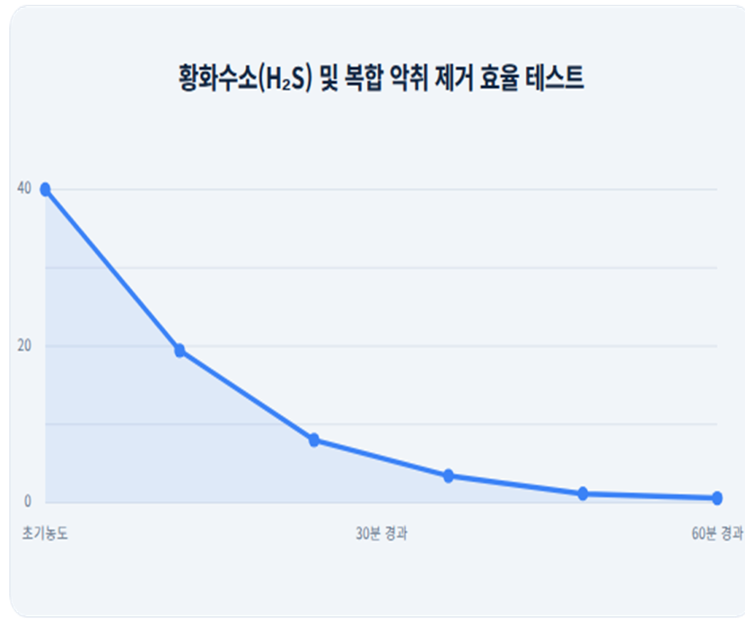

산업용 · EX-CLEAN
탄소중립 시대!
친환경 혁신 슬러지 감소 솔루션
공공 하수·축산분뇨 처리장의 슬러지 발생량을 감소시키는 친환경 슬러지 저감 솔루션입니다. 위생적이고 안전한 100% 친환경 수용성 생화학 유기물 분해제로, 하수·분뇨·가축분뇨·음식물 처리장 등에서 발생하는 유기성 슬러지를 감량하고 생물반응조의 미생물 활성화와 생물 반응을 촉진합니다.
- 공공 하수 · 축산분뇨 처리장용
- 막여과 공법(MBR) 차압과 방류량 안정화
- 슬러지 저감 및 탈수 효율 증대 (1㎥당 슬러지 발생량 173.9kg → 49.75kg)
- 고농도 침출수의 농도 완화 및 복합악취 저감
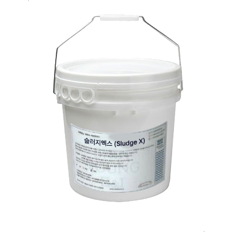
산업용 · Sludge X
슬러지엑스
100% 친환경 수용성 제제로, 유기성 슬러지 저감 및 공정 효율화에 최적화된 제품입니다.
- 🌱 친환경 인증
- ✓ 인체 무해
주요 특징
- 안정성이 검증된 친환경 생물학적 분해제
- 동물 및 인체에 전혀 무해한 친환경 성분
- 생물학, 생화학, 물리화학에 의한 유기물의 점도분해로 인한 부유물 액화 반응
공정도
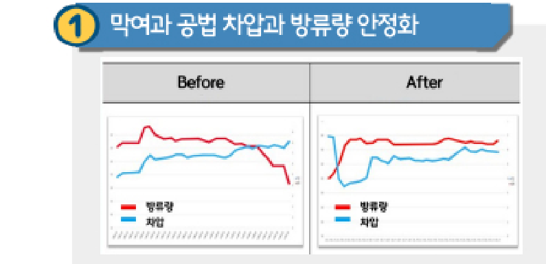
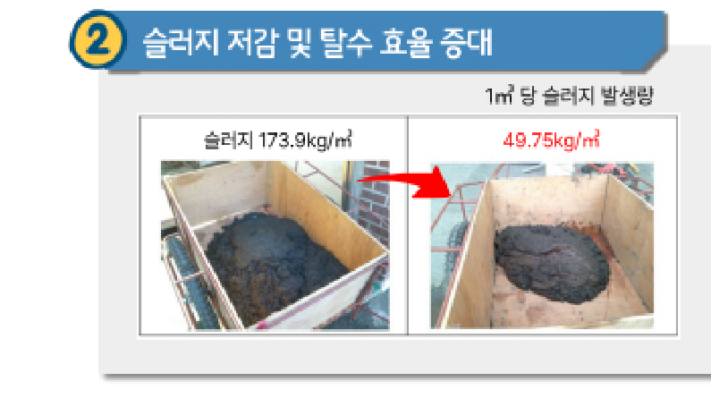
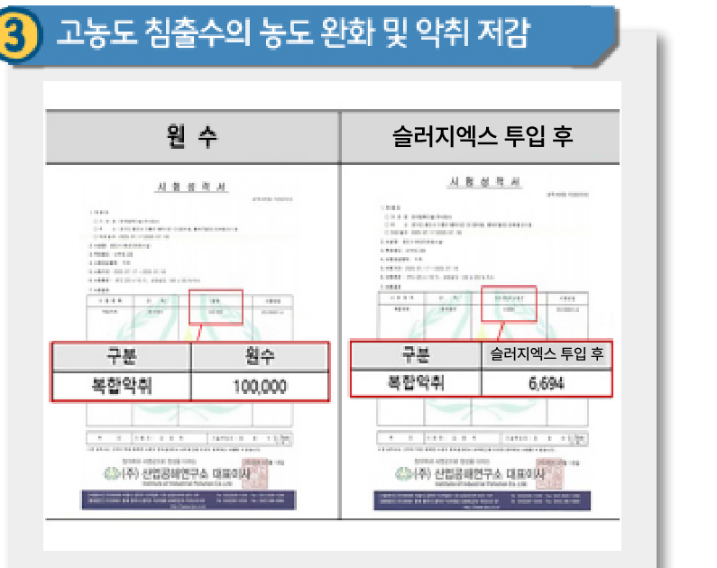
차원이 다른 분해력 '슬러지엑스' 기술의 비밀
- 친환경 생화학적 분해 원리: 천연 유기물 원료를 사용하여 기존 화학 약품과는 달리 환경에 무해하며, 폐수처리과정의 생물 반응을 최적화합니다.
- 고효율 유기물 분해: 고활성 효소 및 유기물 촉진 인자가 슬러지 내 유기물을 빠르게 분해하여, 고형물 발생 자체를 근본적으로 억제합니다.
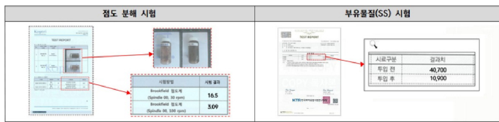
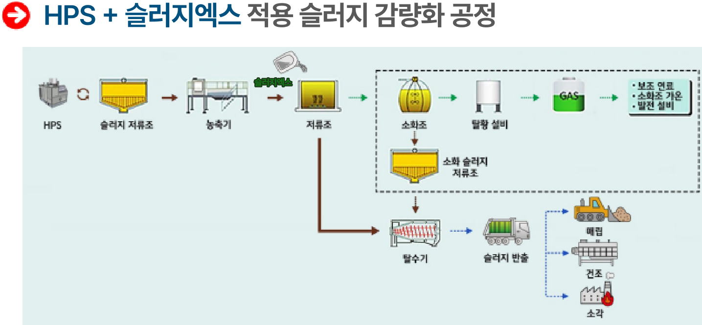
분리막(중공막·평막)의 오염으로 인한 세정 및 교체 주기를 연장, 슬러지 발생량 감소
생물반응조 내 미생물 활성화 촉진(안정적 수질관리), 슬러지 저감
혐기소화 반응을 촉진하여 소화 기간 단축, 매탄가스 증산, 황발생 제어, 슬러지 감량
침출수 농도 개선 및 악취 저감, 침출수 연결 처리 용이
산업용 · Clean One Oil -401
클린원 오일 401
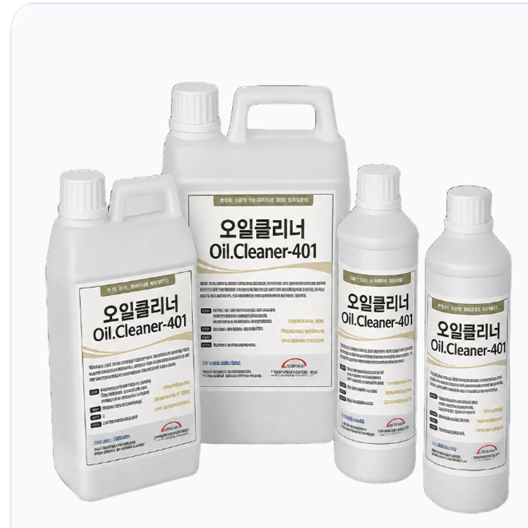
원유, 가솔린 등 탄화수소류 누출 현장 정화를 위한 친환경 분해제입니다. 금속, 석재, 콘크리트 표면의 오염은 물론 수질 내 유류 방류 시에도 점도를 제거하고 탁월한 세정 성능을 발휘합니다.
주요 적용 현장
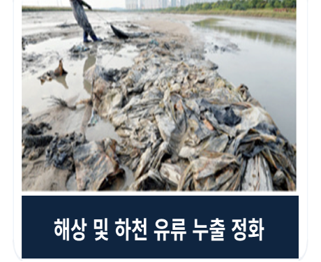
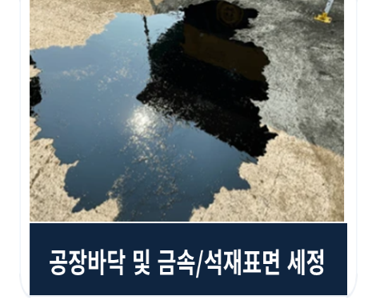
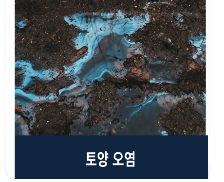
산업용 · Oil Cleaner 636
클린원 오일 636
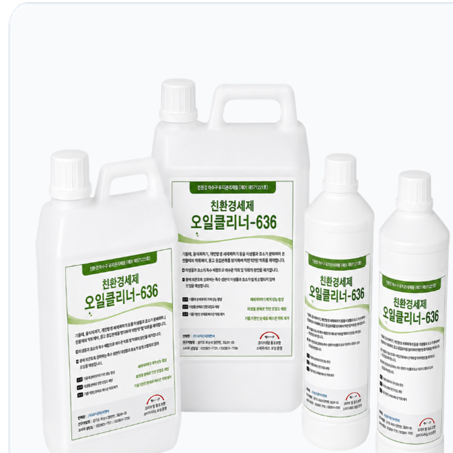
육류/가공공장, 식당의 동물성 지방질 및 식용유 등을 즉시 세정하는 제품입니다. 지방과 구리스를 분해하여 표면 재점착을 방지하며, 바닥 미끄러움과 위생 문제를 동시에 해결합니다.
주요 적용 현장
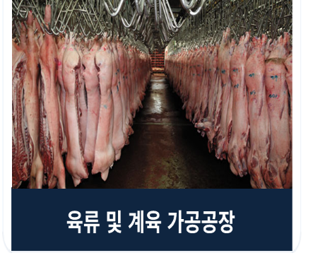
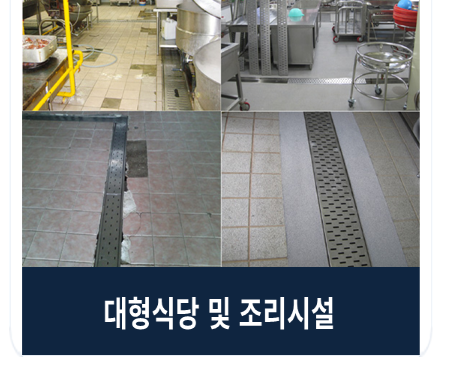
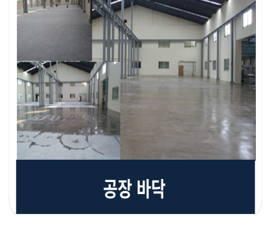
01 · Freeco Spray

생활용 · 프리코 냄새 제거 스프레이
반복되는 생활 냄새,
원인부터 관리
땀과 피지,
생활 냄새의 원인까지 관리
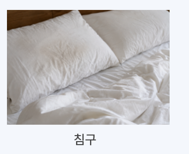
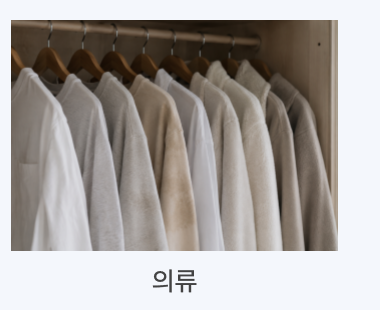
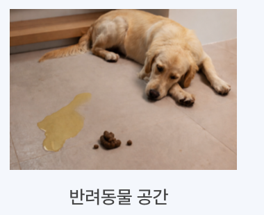
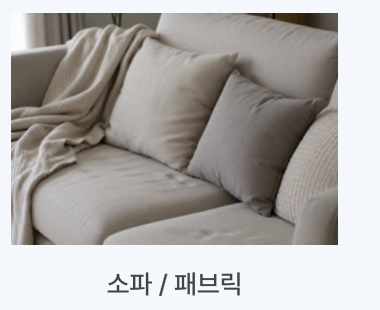
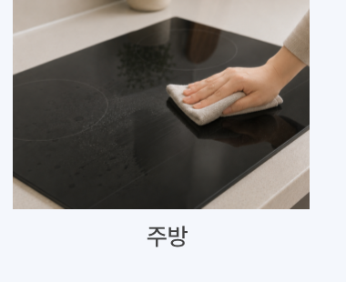
- 냄새가 발생하는 공간 또는 표면에 충분히 분사해 주세요.
- 사용 대상에 따라 자연 건조하거나 마른 천으로 가볍게 닦아주시면 생활 공간을 더욱 쾌적하고 뽀송뽀송하게 관리할 수 있습니다.
프리코는 향으로 냄새를 가리는 것이 아니라, 냄새 발생 원인을 관리하여 반복되는 생활 악취를 효과적으로 케어합니다.
02 · Freeco Shoe Deodorizing Pad
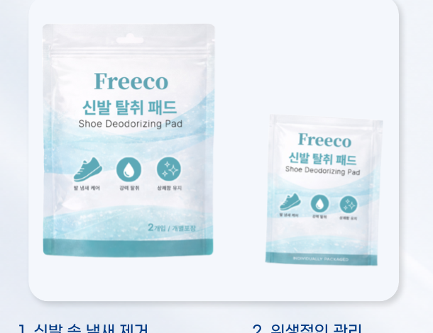
생활용 · 프리코 신발 냄새 제거 팩
신발 속에 넣어두는 제거 팩,
간편 신발 냄새 제거
신발 속, 신발장, 운동가방, 라커룸 등 밀폐된 공간에 넣어두기만 하면 되는 간편한 신발 냄새 제거 팩입니다.
벗는 순간 올라오는 불쾌한 냄새,
이제 간편하게 리셋.
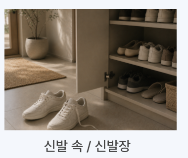
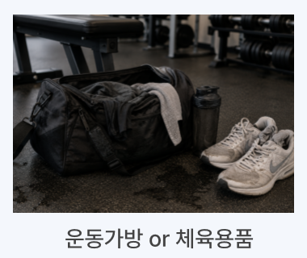
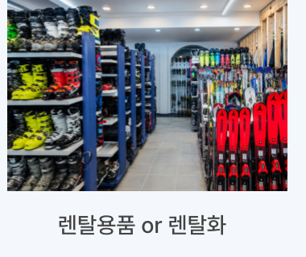
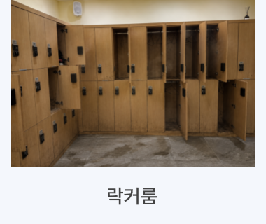
- 신발 속 또는 신발장에 넣어 사용해 주세요.
- 운동화, 작업화, 렌탈화 등 다양한 신발에 사용할 수 있습니다.
- 신발장, 사물함 등 밀폐된 공간에 함께 사용하면 공간에 남아있는 냄새까지 쾌적하게 관리할 수 있습니다.
프리코는 향으로 냄새를 덮는 것이 아니라, 신발 속 냄새 발생 원인을 관리하여 쾌적한 신발 환경을 유지합니다.
프리코 · 성능 및 인증
엄격한 시험을 통과한,
믿을 수 있는 품질
Odor Reduction
92.9%
탈취 효율
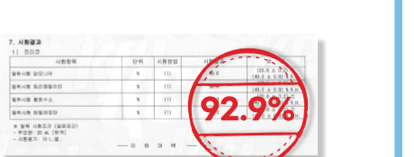
Bacteria Reduction
99.9%
세균 감소율
Heavy Metals
불검출
중금속 · 위해우려물질
Eco Label
인증완료
환경마크(환경부)
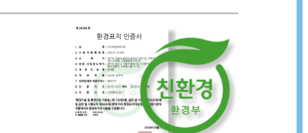
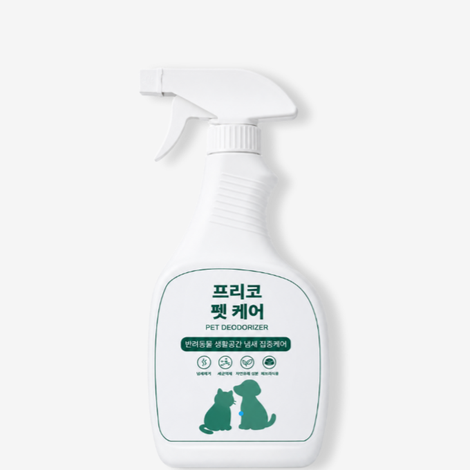
생활용 · 프리코 펫 케어
반려동물을 위한
쾌적한 공간 관리
배변 주변 암모니아 냄새, 반려동물 침구, 하우스·캣타워까지 — 반려동물이 머무는 다양한 생활 공간의 냄새 원인을 관리하는 동물용 프리코입니다.
- 🌱 친환경 인증(환경부)
- 동물용 500mL
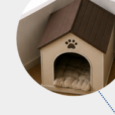
하우스 · 켄넬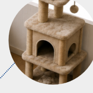
캣타워 · 스크래치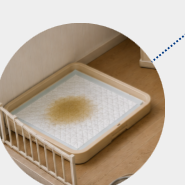
배변패드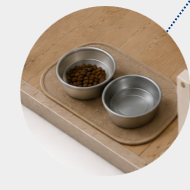
식기 주변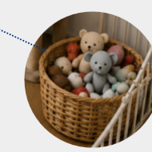
장난감 · 용품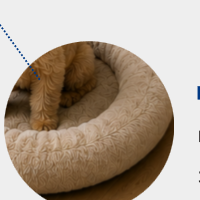
방석 · 침구프리코는 향으로 덮지 않고, 냄새의 원인을 분해합니다. 근본적인 원인 제거로 반려동물과 함께하는 공간을 더욱 쾌적하게 유지합니다.
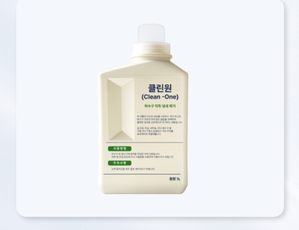
생활용 · 클린원(Clean-One)
하수구 속 악취 원인,
간편하게 케어
화장실·세탁실·베란다·싱크대 등 다양한 배수구에 원액을 부어 간편하게 사용하는 하수구 냄새 제거제입니다.
- 하수구 및 배수구에 원액을 적당량 부어 사용해 주세요.
- 악취 및 오염 정도에 따라 사용량을 조절할 수 있으며, 화장실·하수구·배수구·싱크대 등의 불쾌한 냄새를 간편하게 관리할 수 있습니다.
프리코는 하수구 속 악취 원인을 관리하여 반복되는 냄새를 효과적으로 케어합니다.